「WebMatrix 2」の導入
公開日：
Windows 環境で Web 開発*1を行うならば、まず利用を検討してみてほしいのが「WebMatrix 2」です。
まぁ、ほかにもいろいろ便利なツールはあると思いますけど、これが一番楽ちんだと思います。だまされたと思って一度インストールしてみてください。
「WebMatrix 2」のインストール
インストーラーを実行すると、「Web Platform Installer 4.0」が起動します。
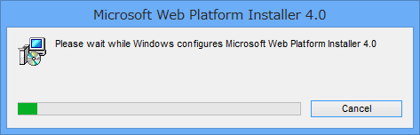
「Web Platform Installer」は、Microsoft による Web 開発に必要なサーバー・フレームワーク・データベース・ツール・アプリケーションを手軽に導入するためのインストーラーです。
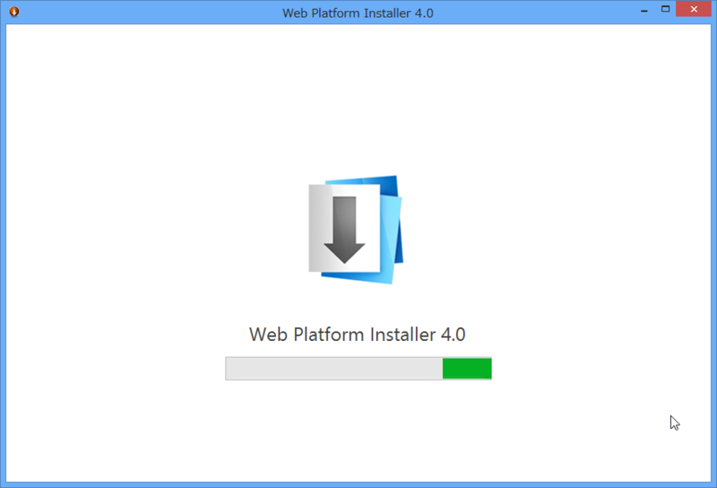
「Web Platform Installer」がセットアップされると、続いて「WebMatrix 2」のインストールへ移ります。
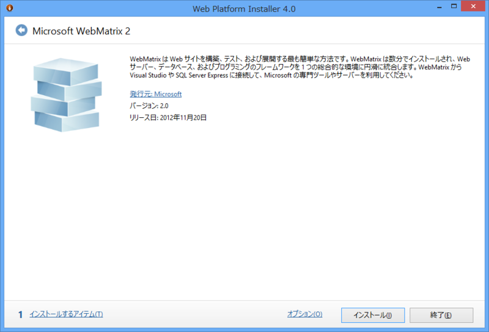
［インストール］ボタンを押せば、インストールが開始されます。
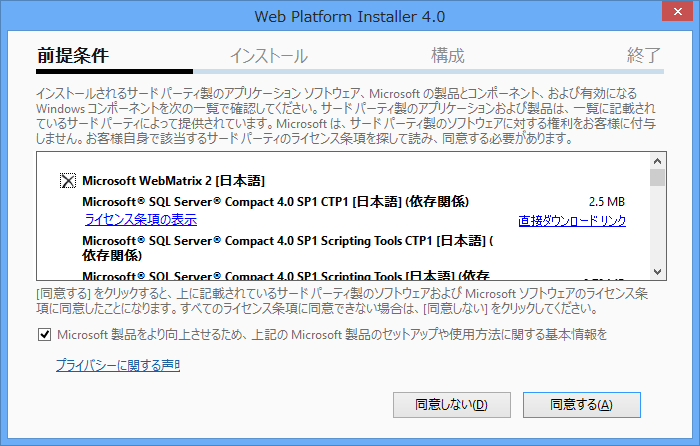
「Web Platform Installer」が便利なのは、「WebMatrix 2」の実行に必要なコンポーネントを勝手にダウンロードしてインストールしてくれるところです*2。
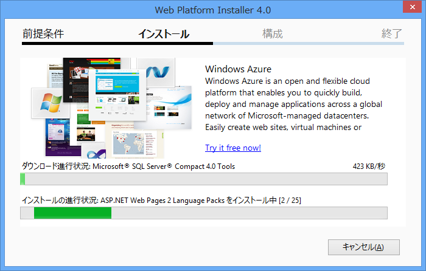
ちなみに、現時点での最新版は「WebMatrix 2 Refresh 2」です。
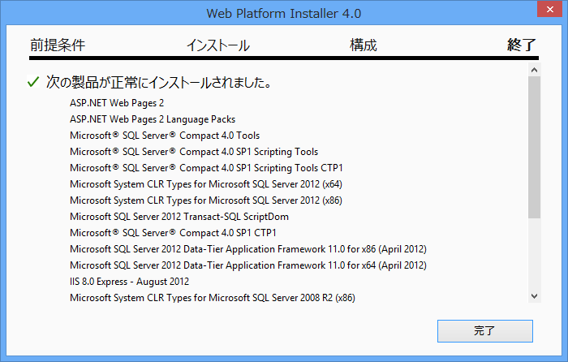
インストールが完了しました。多くのコンポーネントが自動でインストールされているのがわかります。
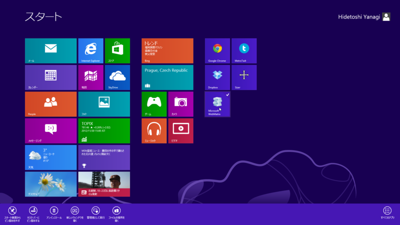
起動はスタート画面から。頻繁に利用する場合は、“ピン留め”しておくと便利です。
「Web Platform Installer 4.0」について
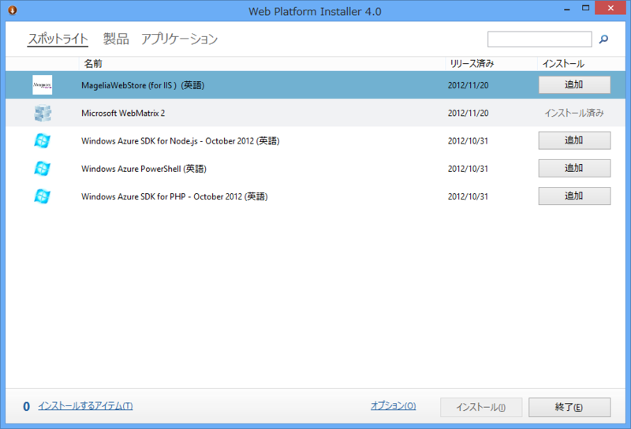
「Web Matrix 2」のインストールが終了すると、「Web Platform Installer 4.0」へ戻ります。もし必要なツールがあれば、続けてインストールすることも可能です。
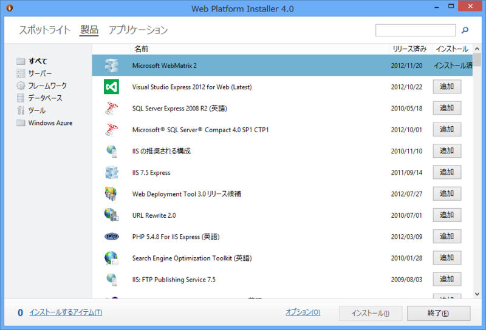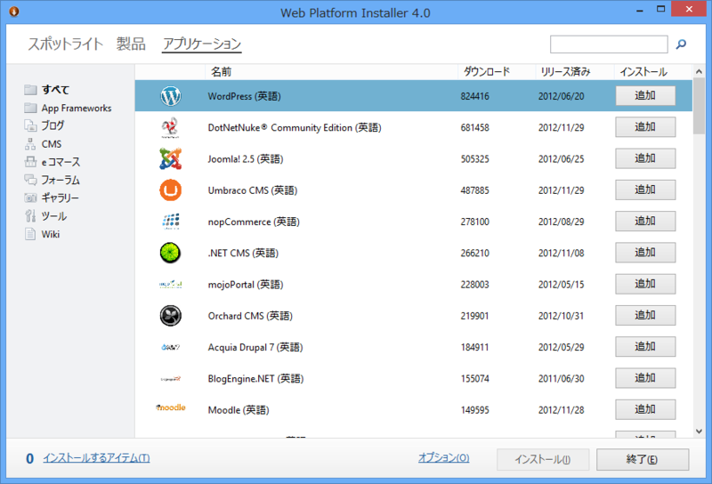
「Web Platform Installer 4.0」は Microsoft の製品ですが、インストールできるのは Microsoft のものに限りません。とくに Web アプリケーションは、オープンソースで開発されたものにも幅広く対応しています。ただ、Web アプリケーションのインストールは「Web Matrix 2」からも行えますので、「Web Platform Installer 4.0」についてはあまり気にしなくてもよいかと。そういうものがあるんだ、とだけ覚えていてもらえれば十分だと思います。
おまけ
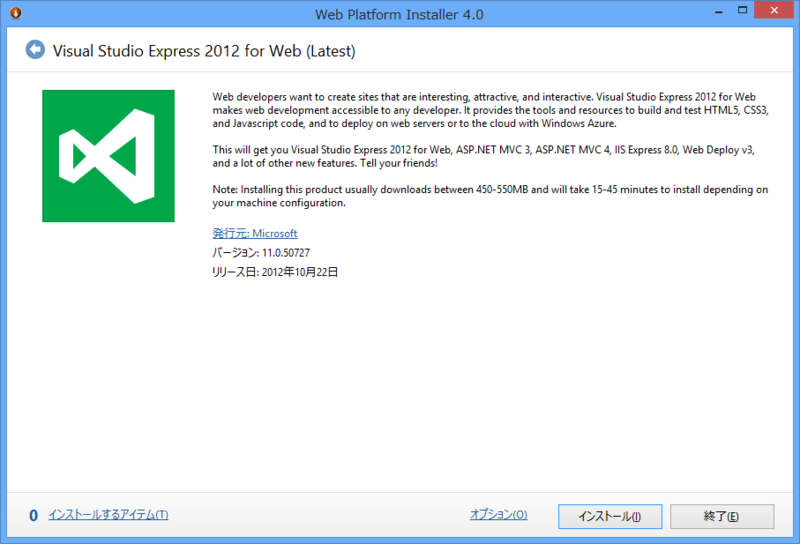
「Visual Studio 2012 Experess for Web」は無償の Web 開発環境で、いわば「WebMatrix 2」の“お兄さん”にあたります。ついでにインストールしておくと、「WebMatrix 2」では手に負えないときに助かります。
今日のところはここまで。